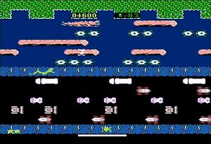
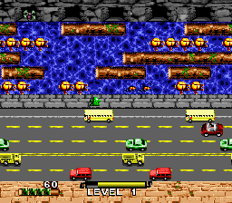

Frogger est un jeu vidéo d'arcade développé par Konami et sorti en 1981. Il est généralement considéré comme un classique de ce média.
Le jeu est l'une des entrées de l'ouvrage Les 1001 jeux vidéo auxquels il faut avoir joué dans sa vie2.
Le jeu apparaît dans un des épisodes de Seinfeld. Jerry Seinfeld et George Costanza visitent une
pizzeria où
ils
avaient l'habitude d'aller lorsqu'ils étaient plus jeunes. Il y découvre une machine de Frogger, où
Costanza
est
toujours présent dans la liste des meilleurs scores. Costanza achète la machine et essaye de la ramener
chez
lui. Pour cela, il est amené à traverser une route de New York d'une manière qui parodie directement le
jeu.
En 1982, Buckner and Garcia enregistrèrent une chanson appelée Froggy's Lament utilisant des effets
sonores
du
jeu, sortie sur l'album Pac-Man Fever.
La grenouille de Frogger fait aussi une apparition dans le film Pixels ainsi que dans le cours métrage
Pixels.
Frogger est aussi nommé dans la chanson Abiura di me du chanteur Italien Caparezza.
Frogger a eu le droit à de nombreux portages et adaptations comme sur Atari 2600 (édité par Parker Brothers), Videopac (en 1982, édité par Parker Brothers)3, ZX81 (en 1981, édité par Cornsoft), Commodore 64, MSX, Mega Drive, Super Nintendo, Game Boy, PlayStation, PC, Xbox 360 et iPhone.
En décembre 20094, l'Américain Pat Laffaye décroche sur borne arcade le record vérifié, avec 896 980 points, devenant par la même occasion le premier joueur à battre le score fictif de George Constanza (860 630 points) dans la série Seinfeld (voir Postérité)5. Toutefois, ce record a depuis été battu à deux reprises par son compatriote Michael Smith, qui dépasse, le 27 février 2022, le million de points (1 356 520)6.
Il s'agit du dernier jeu sous licence officielle sorti sur la Super Nintendo. Ce fut également l'un des derniers jeux pour Sega Genesis, Duke Nukem 3D (1996) étant sorti au Brésil la même année.
Commodore 64
NES
Super Nintendo